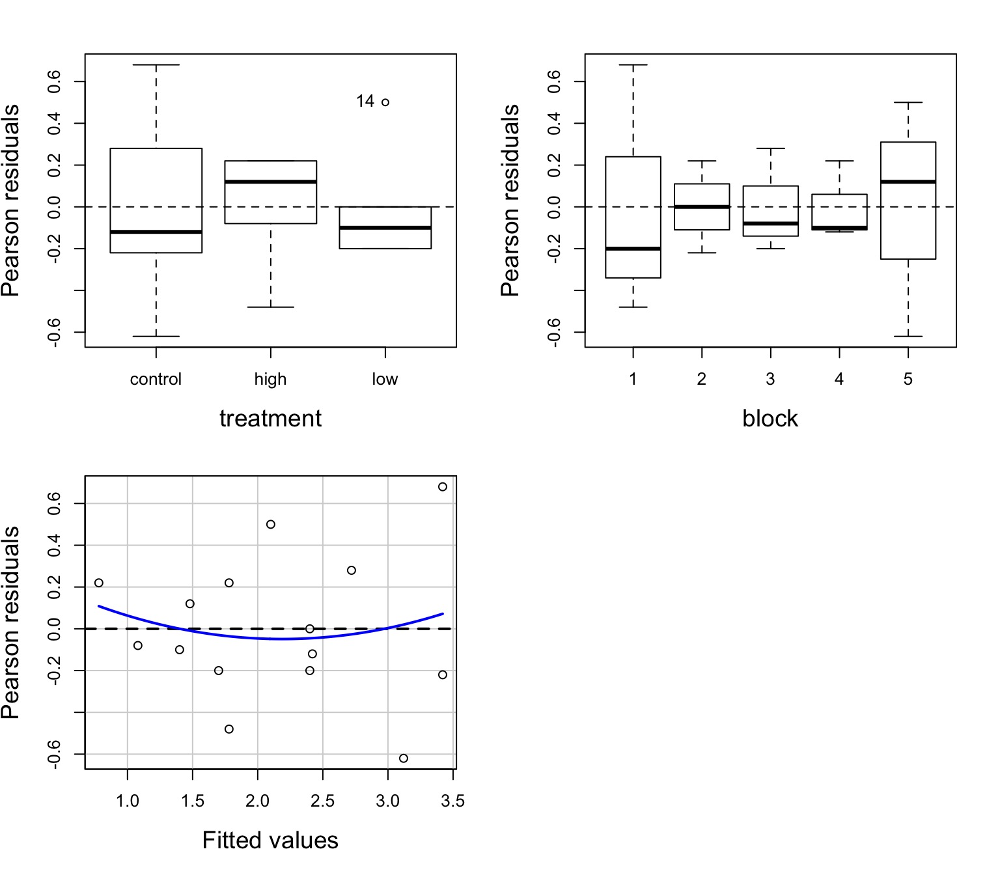

Many Treatments: Multi-Way ANOVA

Effects of Stickleback Density on Zooplankton


Where Would You Place Replicates?

Randomization

Costs? Benefits?
Blocked Design

Incorporates Gradient
n=1 per block
Randomized Controlled Blocked Design

Randomization within blocks
Effects of Stickleback Density on Zooplankton
Units placed across a lake so that 1 set of each treatment was ’blocked’ together
Treatment and Block Effects
The Steps of Statistical Modeling
- What is your question?
- What model of the world matches your question?
- Build a test
- Evaluate test assumptions
- Evaluate test results
- Visualize
Multiway ANOVA
- Many different treatment types
- 2-Way ANOVA is for Treatment and block
- 3-Way for, e.g., Sticklebacks, Nutrients, and block
- 4-way, etc., all possible
- Assumes treatments are fully orthogonal
- Each type of treatment type A has all levels of treatment type B - E.g., Each stickleback treatment is present in each block
- Experiment is balanced for simple effects
- Simple effect is the unique combination of two or more treatments
- Balance implies the sample size for each treatment combination is the same
- Simple effect is the unique combination of two or more treatments
Model for Multiway ANOVA/ANODEV
\[y_{k} = \beta_{0} + \sum \beta_{i}x_{i} + \sum \beta_{j}x_{j} + \epsilon_{k}\]
\[\epsilon_{ijk} \sim N(0, \sigma^{2} ), \qquad x_{i} = 0,1\]
Or, with matrices…
\[\boldsymbol{Y} = \boldsymbol{\beta X} + \boldsymbol{\epsilon}\]
Assumptions of Multiway Anova
Independence of data points
Normality within groups (of residuals)
No relationship between fitted and residual values
Homoscedasticity (homogeneity of variance) of groups
Additivity of Treatments
The Usual Suspects of Assumptions
Group Residuals

Tukey’s Test of Non-additivity:
- Our model is \(y_{ij} = \mu + \alpha_i + \beta_j + \epsilon_{ij}\)
- But, if A and B are non-additive, results are incorrect.
- We don’t have the DF with n=1 per treatment combination to calculate an interaction, so…
- Assume a model of \(y_{ij} = \mu + \alpha_i + \beta_j + \lambda\alpha_i\beta_j\)
- We can then test for \(SS_{AB}\) using \(\lambda\alpha_i\beta_j\)
Tukey’s Test of Non-additivity:
Test stat Pr(>|Test stat|)
treatment
block
Tukey test 0.4742 0.6354Hypotheses for Multiway ANOVA/ANODEV
TreatmentHo: \(\mu_{i1} = \mu{i2} = \mu{i3} = ...\)
Block Ho: \(\mu_{j1} = \mu{j2} = \mu{j3} = ...\)
i.e., The variane due to each treatment type is no different than noise
We Decompose Sums of Squares for Multiway ANOVA
\(SS_{Total} = SS_{Between A} + SS_{Between B} + SS_{Within}\)
- Factors are Orthogonal and Balanced, so, Model SS can be split
- F-Test using Mean Squares as Before
F-Test
| term | df | sumsq | meansq | statistic | p.value |
|---|---|---|---|---|---|
| treatment | 2 | 6.857 | 3.429 | 16.366 | 0.001 |
| block | 4 | 2.340 | 0.585 | 2.792 | 0.101 |
| Residuals | 8 | 1.676 | 0.209 | NA | NA |
How to evaluate effects of each treatment
- Examine means estimates
- Evaluate treatment after parcelling out effect of other treatment
- Evaluate treatment at the median or mean level of other treatment
Evaluating Treatment Effects
| term | estimate | std.error | statistic | p.value |
|---|---|---|---|---|
| treatmentcontrol | 3.42 | 0.3126766 | 10.9378182 | 0.0000043 |
| treatmenthigh | 1.78 | 0.3126766 | 5.6927826 | 0.0004582 |
| treatmentlow | 2.40 | 0.3126766 | 7.6756619 | 0.0000588 |
| block2 | 0.00 | 0.3737200 | 0.0000000 | 1.0000000 |
| block3 | -0.70 | 0.3737200 | -1.8730599 | 0.0979452 |
| block4 | -1.00 | 0.3737200 | -2.6757998 | 0.0281084 |
| block5 | -0.30 | 0.3737200 | -0.8027399 | 0.4453163 |
Parcelling Out Second Treatment

Component-Residual Plots take examine unique effect of one treatment after removing influence of the other.
Median Value of Second Treatment
Comparison of Differences at Average of Other Treatment
| contrast | estimate | SE | df | t.ratio | p.value |
|---|---|---|---|---|---|
| control - high | 1.64 | 0.289 | 8 | 5.665 | 0.001 |
| control - low | 1.02 | 0.289 | 8 | 3.524 | 0.019 |
| high - low | -0.62 | 0.289 | 8 | -2.142 | 0.142 |
What if my design is unbalanced?
Uh oh… a cat ate my treatment!
This is a big problem
Sums of Squares are not ‘unbalanced’ - more information goes into one than the other
Suddenly, order matters…
Entering Treatment First
zooplankton ~ treatment + block| Df | Sum Sq | Mean Sq | F value | Pr(>F) | |
|---|---|---|---|---|---|
| treatment | 2 | 4.171 | 2.086 | 18.046 | 0.002 |
| block | 4 | 1.749 | 0.437 | 3.783 | 0.060 |
| Residuals | 7 | 0.809 | 0.116 | NA | NA |
zooplankton ~ block + treatment| Df | Sum Sq | Mean Sq | F value | Pr(>F) | |
|---|---|---|---|---|---|
| block | 4 | 1.878 | 0.469 | 4.062 | 0.052 |
| treatment | 2 | 4.043 | 2.021 | 17.490 | 0.002 |
| Residuals | 7 | 0.809 | 0.116 | NA | NA |
What’s Going On: Type I and II Sums of Squares
Type I Sums of Squares:
SS for A calculated from a model with A + Intercept versus just Intercept
SS for B calculated from a model with A + B + Intercept versus A + Intercept
This is fine for a balanced design. Variation evenly partitioned.
What’s Going On: Type I and II Sums of Squares
Type II Sums of Squares:
SS for A calculated from a model with A + B + Intercept versus B + Intercept
SS for B calculated from a model with A + B + Intercept versus A + Intercept
Each SS is the unique contribution of a treatment
If the design is balanced, no different than type I
What’s Going On: Type I and II Sums of Squares
| Type I | Type II | |
| Test for A | A v. 1 | A + B v. B |
| Test for B | A + B v. A | A + B v. A |
Sequential SS v. Marginal SS
Type II SS to the Rescue
| Sum Sq | Df | F value | Pr(>F) | |
|---|---|---|---|---|
| treatment | 4.043 | 2 | 17.490 | 0.002 |
| block | 1.749 | 4 | 3.783 | 0.060 |
| Residuals | 0.809 | 7 | NA | NA |
Compare to zooplankton ~ treatment + block:
| Df | Sum Sq | Mean Sq | F value | Pr(>F) | |
|---|---|---|---|---|---|
| treatment | 2 | 4.171 | 2.086 | 18.046 | 0.002 |
| block | 4 | 1.749 | 0.437 | 3.783 | 0.060 |
| Residuals | 7 | 0.809 | 0.116 | NA | NA |
Type II SS to the Rescue
| Sum Sq | Df | F value | Pr(>F) | |
|---|---|---|---|---|
| treatment | 4.043 | 2 | 17.490 | 0.002 |
| block | 1.749 | 4 | 3.783 | 0.060 |
| Residuals | 0.809 | 7 | NA | NA |
Compare to zooplankton ~ block + treatment:
| Df | Sum Sq | Mean Sq | F value | Pr(>F) | |
|---|---|---|---|---|---|
| block | 4 | 1.878 | 0.469 | 4.062 | 0.052 |
| treatment | 2 | 4.043 | 2.021 | 17.490 | 0.002 |
| Residuals | 7 | 0.809 | 0.116 | NA | NA |
Non-Least Squares Approaches
Variance Paritioning Gets More Interesting!
Beyond 2-Way ANOVA
Latin Squares Design

Accomodates multiple gradients
Latin Squares
| Col 1 | Col 2 | Col 3 | Col 4 | |
|---|---|---|---|---|
| Row 1 | A | B | C | D |
| Row 2 | B | C | D | A |
| Row 3 | C | D | A | B |
| Row 4 | D | A | B | C |
Every row and column contains one replicate of a treatment.
Can be generalized to n gradients \[y_{ijkl} = \beta_{0} + \sum \beta_{i}x_{i} + \sum \beta_{j}x_{j} + \sum \beta_{k}x_{k} +\epsilon_{ijkl}\]
\[\epsilon_{ijk} \sim N(0, \sigma^{2} ), \qquad x_{i} = 0,1\]
Many Treatments